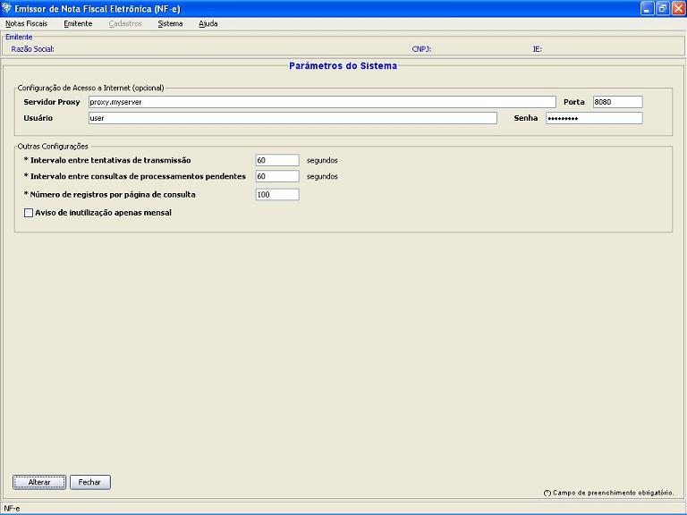

Software Emissor NF-e
Parâmetros do sistema
Compreende os dados relativos as propriedades básicas do sistema.
Acesso por: Sistema -> Parâmetros
Não é necessário um emitente iniciado para o acesso.
Tela de Parâmetros do Sistema

Configurações de Acesso a Internet
Caso a
máquina necessite de configuração de Proxy para a
conexão com a Internet, configurar os campos abaixo.
Contatar o administrador de rede para a configuração correta.
- Servidor Proxy
- Porta
- Usuário
- Senha
Outras Configurações
Intervalo entre
tentativas de transmissão
Caso ocorra algum erro durante a transmissão, o aplicativo tentará realizar
novamente a transmissão após o intervalo de tempo especificado neste parâmetro.
Formato: Numérico de 10 a 600 segundos
Intervalo entre
consultas de processamento pendentes
Durante a
consulta pelos protocolos de autorização das NF-e's logo
após a realização da transmissão, caso a
NF-e ainda estiver em processamento na SEFAZ (processamento pendente),
o Software Emissor NF-e agendará uma nova consulta e
realizará uma nova consulta após o intervalo de tempo
especificado neste parâmetro.
Formato: Numérico de 10 a 600 segundos
Número de registros
por página de consulta
O número máximo de registros exibidos em uma tela de consulta (ou seja, caso
uma pesquisa retorne 100 itens e o número de registros por página de consulta
seja igual a 10, serão mostrados apenas 10 registros por vez).
Parâmetro útil para pesquisas com grande número de registros retornados.
Formato: Numérico de 1 a 10000 registros por página
de consulta
Aviso de Inutilização apenas mensal
Por padrão, a cada vez que o Software for executado, este informará as faixas a serem inutilizadas.
Caso este parâmetro esteja habilitado, o
Software somente informará as faixas a serem inutilizadas no
início de cada mês, com base na data configurada do
Sistema Operacional.
Formato: Habilitado/Desabilitado